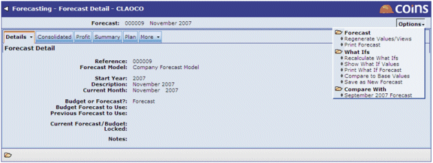

The Options menu primarily allows the forecast data to be updated or compared with other forecasts. The list of actions available from the menu can be split into three categories: Forecast, What Ifs and Compare With.
